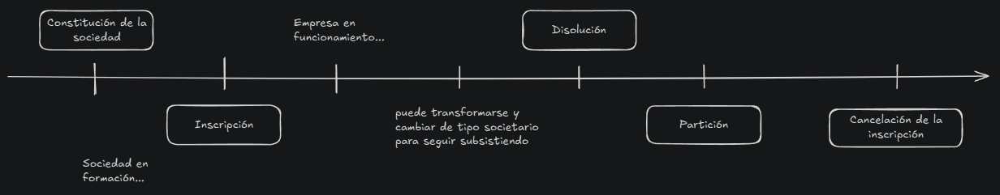

Clase 01
18 / 03
Término "Emprendimiento"
- Viene del francés entrepreneur, que significa "pionero" .
- Pionero: Persona o empresa que se atreve a explorar nuevos territorios siendo la primera en un mercado con un producto, servicio, modelo de negocio, etc.
- Negocios: Cualquier actividad que se realiza para ganar dinero. Puede incluir la extracción de recursos naturales, la fabricación de productos, la distribución, el almacenamiento, y la venta de bienes o servicios.
Puede ser un lugar físico, como una tienda o un restaurante, o puede operar en línea. - Se emprende para beneficiarse económicamente.
Habilidades blandas / Soft skills
Competencias (habilidades) personales y sociales que permiten relacionarse y desenvolverse en la vida.
Se desarrollan con la experiencia
Son la base para saber como trabajar en colaboración (equipo)
Ejemplos de habilidades blandas:
- Proactividad
- Comunicación efectiva
- Trabajo en equipo
- Resolución de problemas
- Inteligencia emocional
- Pensamiento crítico y estratégico
- Creatividad e innovación
- Ética profesional
- Adaptabilidad
- Gestión del tiempo
Dinámicas de las empresas / del trabajo
Desde la escuela se prepara a los estudiantes para seguir una dinamica que luego se mantiene cuando se trabaja en una empresa. Enseñar a respetar la autoridad y los rangos, cumplir un horario, saber trabajar en equipo, desarrollar habilidades de comunicación, etc.
Hoy en día estas estructuras organizacionales son más flexibles y menos jerárquicas. Predomina una cultura de innovación, riesgo calculado y adaptación rápida al cambio.
- Entender las cuestiones generacionales para adaptar el comportamiento en el ambiente laboral.
- Entender de dónde venimos para saber hacia dónde vamos.
Organización: Agrupación de personas que trabajan juntas para lograr un objetivo en común.
* organización = empresa
Empresa: Toda actividad económica organizada para la producción, transformación, circulación, administración y custodia de bienes o para la prestación de servicios.
La empresa debe tener un fin economico.
Deben tener un "nombre comercial".
Distinguir empresa por actividad económica
Las actividades económicas de una empresa se dividen en tres sectores: primario, secundario y terciario
* actividad económica = operaciones que realiza para producir, distribuir y vender bienes o servicios, con el objetivo de satisfacer necesidades o deseos del mercado y generar ingresos
-
Sector primario:
se enfoca en la materia prima y extracción de recursos naturales.
ej: Agricultura, ganaderia, pesca, mineria -
Sector secundario "industrial":
transforma los recursos en productos manufacturados.
ej: Industria, construccion -
Sector terciario:
vende y genera servicios con los productos.
ej: Transporte, comercio, finanzas, servicios
Distinguir empresa por su aspecto jurídico
Cómo se fundó.
Cuando se crea la empresa, decidir que se quiere hacer y de que manera. Se definine la cantidad de socios y que responsabilidad tendran, que capital se aporta y de donde viene (publico, particular, mixto)
Distinguir empresa por localización
Las empresas pueden ser locales, nacionales o multinacionales
-
Empresa local
Solo tiene una sucursal en un solo lugar.
-
Empresa nacional
Tiene sedes por distintos lados del pais.
-
Empresa multinacional
Operan en varios países, con su sede central en un país y sedes en otros.
Razón social
Es única y registrada oficialmente.
Identifica legalmente a la empresa frente a terceros.
Se usa en trámites formales y legales, como apertura de cuentas bancarias, pago de impuestos y acuerdos contractuales.
Puede ser (dependiendo del tipo de sociedad):
* cada tipo de sociedad tiene características en cuanto a responsabilidades, impuestos y estructura de organización.
Tipos de Sociedades
"S.A." Sociedad Anónima
- Capital dividido en acciones.
- Los socios solo responden hasta el monto de su aporte.
* socio: persona, física o jurídica, que se asocia con otros para formar y desarrollar una empresa o actividad comercial. Comparten capital, responsabilidades y beneficios.
- Mayor formalidad y requisitos legales.
- Ideal para grandes empresas o proyectos con múltiples inversionistas.
"S.R.L." Sociedad de Responsabilidad Limitada
- Capital dividido en cuotas de participación.
- Los socios tienen responsabilidad limitada según su aporte.
- Menos requisitos legales que la S.A.
- Recomendada para pequeñas y medianas empresas (PYMEs "Pequeña y Mediana Empresa").
* Las PYMEs son negocios con un número reducido de empleados y un volumen de facturación moderado. Son la base de la economía de un país, ya que generan empleos y aportan capital y tecnología.
"S.C." Sociedad Colectiva
- Los socios tienen responsabilidad ilimitada y solidaria por las deudas de la empresa.
- Todos los socios participan activamente en la gestión
- Menos común debido al alto riesgo para los socios.
"S.C.S." Sociedad en Comandita Simple y "S.C.A." Sociedad en Comandita por Acciones
- Comanditados: Socios con responsabilidad ilimitada y gestión activa.
- Comanditarios: Socios con responsabilidad limitada segun su aporte y sin gestión activa.
- "Sociedad en Comandita por Acciones" permite mayor facilidad para captar capital.
"S.A.S." Sociedad por Acciones Simplificada
- Estructura flexible y trámites simples
- Puede estar constituida por un único socio.
- Más usado para emprendimientos.
- Responsabilidad limitada según el aporte de capital.
Cooperativa
- Socios que aportan capital y trabajo.
- Todos los socios tienen igualdad de voto, indepndientemente del capital aportado.
- Ideal para actividades economicas con fines de ayuda mutua y beneficio colectivo.
Empresa unipersonal
- Constituida y gestionada por una sola persona.
- El propietario asume la responsabilidad ilimitada de las deudas.
- Es simple y de bajo costo, pero implica mas riesgo personal.
Clase 02
25 / 03
Cuando se clasifica una empresa en el aspecto juridico, se tiene en cuenta el tipo de sociedad
Ley 19.550 - Ley General de Sociedades
Establece los principios y procedimientos que deben seguir las personas jurídicas (sociedades) para su conformación y operación.
-
Disposiciones generales
Define qué es una sociedad.
"Habrá una sociedad cuando una o más personas, en forma organizada y conforme a uno de los tipos de sociedad, se obliguen a hacer aportes para aplicarlos a la producción o al intercambio de bienes y servicios, participando de los beneficios y soportando las pérdidas."
Cuando se genera la empresa se debe aportar capital para aplicarlo a la producción de bienes y servicios, porque como empresa se tiene un ibjetivo lucrativo. Se hace un aporta inicial (inversión)
-
Constitución
- Contenido del contrato social.
- Inscripción en el Registro Público de Comercio.
Para constituir una sociedad se necesita cumplir requisitos:
Ser sujeto de derecho
Tener una organización
Reconocer a uno de los tipos societarios previstos en la Ley
* elegir un tipo societario genera seguridad juridica porque se ajusta a las formas reglamentarias.
Obligatoriedad de aportes para la integración del Patrimonio Social
Tener patrimonio destinado a la producción o intercambio de bienes o servicios
Deberes y obligaciones de los socios: soportar pérdidas y participar de los beneficios
-
Funcionamiento
- Administración
- Fiscalización
- Derechos y obligaciones de socios
- Decisiones
-
Modificaciones del contrato
Cambios en estatuto (nombre, objeto, capital)
-
Disolución y liquidación
Causas de disolución
Proceso de liquidación y pago de deudas
Ciclo de vida de una sociedad
Tipos de Sociedades INFORMALES / FORMALES
Sociedades Informales
- Irregulares: Nacen con intención de ser regulares pero por algun motivo no se concreta.
- De hecho: No tienen contrato escrito pero realizan actividad comercial.
Sociedades de Personas
- Sociedad colectiva: Los socios adquieren responsabilidad subsidiaria, ilimitada y solidaria, por las obligaciones sociales.
Si a alguno de los socios le pasa algo, responden todos por igual. - De capital e industria: Los socios que ponen dinero (capitalistas) responden igual que en una sociedad colectiva (de manera ilimitada ).
Los socios que solo aportan su trabajo (industriales) responden solo hasta el valor de lo que hayan cobrado.
Responden por las ganancias percibidas - En comandita simple: Los socios comanditados responden con todo su patrimonio (igual que en una sociedad colectiva), mientras que los socios comanditarios solo responden hasta el monto del capital que prometieron aportar.
Sociedades de Capital
- Sociedad anónima: Sueln ser empresas de mucha gente. El capital está dividido en acciones, y cada socio responde solo hasta el monto de las acciones que posee.
- En comandita por acciones: Los socios comanditarios solo responden por el capital que aportaron, mientras que los socios comanditados responden de forma ilimitada, subsidiaria y solidariamente.
- Sociedades Unipersonales: Sociedades que pueden formarse con un solo socio, y en ellas se responde únicamente por el capital que se haya aportado.
De Cuota Parte
- De responsabilidad limitada: Los socios solo responden por el capital que aportaron. Debe haber al menos dos socios y no puede haber más de cincuenta. Cada socio tiene una parte de la sociedad y cada uno va a limitar las responsabilidad de esa cuota aparte que corresponde.
Sociedad por Acciones Simplificada y Cooperativas
Sociedad por Acciones Simplificada (S.A.S)
- Se puede dedicar a cualquier actividad legal, en el país o afuera.
- Se crea online en 24 horas usando un estatuto modelo.
- Mínimo 1 socio y 2 a 5 administradores.
- Trámite rápido y económico.
- Costo: 50% del salario mínimo vital y móvil.
- Capital mínimo: 2 salarios mínimos.
- Libros digitales.
Cooperativa
- Asociación de personas que se unen voluntariamente para alcanzar objetivos económicos comunes.
- La empresa es de propiedad conjunta y control democrático.
- Se convoca a una Asamblea Constitutiva (mínimo 15 días antes).
- Los fundadores deben hacer un curso sobre cooperativismo.
- Se inscribe en el INAES (Instituto Nacional de Asociativismo y Economía Social).
Cooperativa Provisión de Servicios Informáticos
- Formada por personas de la misma actividad: desarrolladores web, diseñadores, analistas de sistemas, licenciados en informática, entre otros.
Derecho informático | Informática jurídica
Informática juridica Documentaria
- Conjunto de leyes y normas que regulan el uso de la informática.
- Uso de la informática para generar una gestion de documentos o almacenamiento juridico.
* Informática legal = se refiere al uso de la info para el desa de nuevas leyes, regulaciones, etc. Al tener tant disponibilidad de la tecnología, se necesita que el dereche acompane la evolucion de la informática
Clase 03
00 / 00
Clase 04
00 / 00
Clase 05
00 / 00